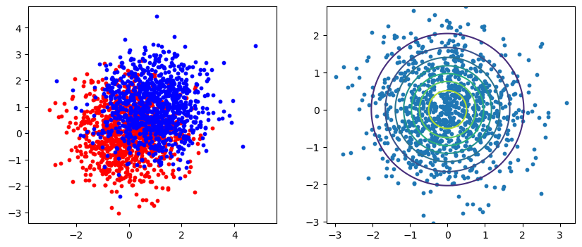
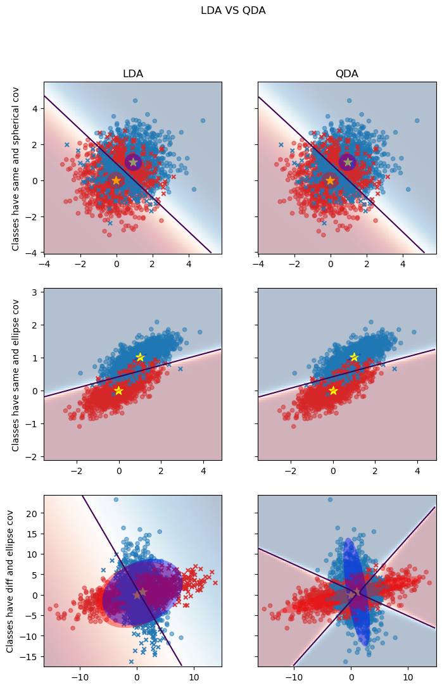

线性判别分析Linear Discriminant Analysis.
平方判别分析 Quadratic Discriminant Analysis.
LDA, QDA
isotropic 各向同性。在所有方向上分布相同。
isotropic_covariance：
makedata#
def make_data(n_samples, n_features, linear_transform_class_1, linear_transform_class_2, seed=0):
rng = np.random.RandomState(seed)
# 实际的cov 为 transform.T * transform
X = np.concatenate(
[
rng.randn(n_samples, n_features) @ linear_transform_class_1,
rng.randn(n_samples, n_features) @ linear_transform_class_2 + np.array([1, 1]), # 向右上平移
]
)
y = np.concatenate([np.zeros(n_samples), np.ones(n_samples)])
return X, y
简单认识#
import numpy as np
import matplotlib.pyplot as plt
from scipy.stats import multivariate_normal
情形1： 两个类别具有相同的协方差矩阵, 且协方差具有球面特性
linear_transform = np.array([
[1, 0],
[0, 1]
])
X, y = make_data(
n_samples=1000,
n_features=2,
linear_transform_class_1=linear_transform,
linear_transform_class_2=linear_transform,
seed=0
)
# 二维等高线图，
def plot_contour(x1, x2, y_func, ax):
fig = plt.figure(figsize=(4,4))
x1_space = np.linspace(min(x1), max(x1), 1000)
x2_space = np.linspace(min(x2), max(x2), 1000)
x1_grid, x2_grid = np.meshgrid(x1_space, x2_space)
y_grid = y_func(np.column_stack([x1_grid.ravel(), x2_grid.ravel()]))
y_grid = y_grid.reshape(x1_grid.shape)
ax.contour(x1_grid, x2_grid, y_grid)
ax.scatter(x1, x2, s=10)
ax.axis('equal')
rv = multivariate_normal(mean=[0, 0], cov= covariance.T @ covariance)
fig, axes = plt.subplots(nrows=1, ncols=2, figsize=(10, 4))
axes[0].scatter(X[:1000, 0], X[:1000, 1], s= 10, c='red')
axes[0].scatter(X[1000:, 0], X[1000:, 1], s= 10, c='blue')
axes[0].axis('equal')
plot_contour(X[:1000, 0], X[:1000, 1], y_func=rv.pdf, ax=axes[1])

<Figure size 400x400 with 0 Axes>
比较LDA和QDA#
LDA和QDA都假设服从高斯分布
LDA的每类协方差矩阵相同，决策边界是直线
QDA的每类协方差矩阵不同，决策边界是曲线
# 数据分布协方差 园
linear_transform = np.array([
[1, 0],
[0, 1]
])
X_isotropic_covariance, y_isotropic_covariance = make_data(
n_samples=1000,
n_features=2,
linear_transform_class_1=linear_transform,
linear_transform_class_2=linear_transform,
seed=0
)
# 两类数据同分布协方差 椭圆
linear_transform = np.array([
[0, -0.23],
[0.83, 0.23]
])
X_shared_covariance, y_shared_covariance = make_data(
n_samples=1000,
n_features=2,
linear_transform_class_1=linear_transform,
linear_transform_class_2=linear_transform,
seed=0
)
# 两类数据不同分布协方差 椭圆
linear_transform_1 = np.array([
[0, -1],
[2.5, 0.7]
]) * 2.0
linear_transform_2 = linear_transform_1.T
X_diffierent_covariance, y_diffierent_covariance = make_data(
n_samples=1000,
n_features=2,
linear_transform_class_1=linear_transform_1,
linear_transform_class_2=linear_transform_2,
seed=0
)
from sklearn.inspection import DecisionBoundaryDisplay
from matplotlib import colors
from matplotlib.patches import Ellipse
def plot_ellipse(mean, cov, color, ax):
eig_vals, eig_vecs = np.linalg.eigh(cov)
angle = np.degrees(np.arctan2(*eig_vecs[:, 1][::-1]))
# print(f'Ell : width:{eig_vals[1]}, height :{eig_vals[0]}, angle : {angle}, xy = {mean}')
ell = Ellipse(
xy= mean,
width= eig_vals[1],
height= eig_vals[0],
angle = angle,
alpha = 0.4,
facecolor=color,
linewidth=2
)
ax.add_patch(ell)
def plot_result(estimator, X, y, ax):
""" 绘制：
1. 决策边界
2. 散点
3. 中心点
4. cov椭圆
"""
cmap = colors.ListedColormap(['tab:red', 'tab:blue'])
DecisionBoundaryDisplay.from_estimator(
estimator,
X,
response_method = 'predict_proba',
plot_method = 'pcolormesh',
ax = ax,
cmap = 'RdBu',
alpha = 0.3
)
DecisionBoundaryDisplay.from_estimator(
estimator,
X,
response_method="predict_proba",
plot_method="contour",
ax=ax,
alpha=1.0,
levels=[0.5],
)
y_pred = estimator.predict(X)
X_right, y_right = X[y == y_pred], y[y == y_pred]
X_wrong, y_wrong = X[y != y_pred], y[y != y_pred]
ax.scatter(X_right[:, 0], X_right[:, 1], c=y_right, s=20, alpha=0.5, cmap=cmap)
ax.scatter(X_wrong[:, 0], X_wrong[:, 1], c=y_wrong, s=20, alpha=0.9, marker ='x',cmap=cmap)
ax.scatter(estimator.means_[:, 0], estimator.means_[:, 1], c='yellow', s=100,marker='*')
# ellipse
if isinstance(estimator, LinearDiscriminantAnalysis):
covariance = [estimator.covariance_] * 2 # linear由于两类相同，就只记录了一个
else:
covariance = estimator.covariance_
plot_ellipse(estimator.means_[0], covariance[0], 'red', ax)
plot_ellipse(estimator.means_[1], covariance[1], 'blue', ax)
from sklearn.discriminant_analysis import (
LinearDiscriminantAnalysis,
QuadraticDiscriminantAnalysis
)
lda = LinearDiscriminantAnalysis(
solver= 'svd',
store_covariance=True
)
qda = QuadraticDiscriminantAnalysis(
store_covariance=True
)
fig, axes = plt.subplots(nrows=3, ncols=2, sharex='row', sharey='row', figsize=(8,12))
for ax_row, X, y in zip(
axes,
(X_isotropic_covariance, X_shared_covariance, X_diffierent_covariance),
(y_isotropic_covariance, y_shared_covariance, y_diffierent_covariance),
):
lda.fit(X, y)
plot_result(lda, X, y, ax_row[0])
qda.fit(X, y)
plot_result(qda, X, y, ax_row[1])
axes[0, 0].set_title('LDA')
axes[0, 0].set_ylabel('Classes have same and spherical cov')
axes[1, 0].set_ylabel('Classes have same and ellipse cov')
axes[2, 0].set_ylabel('Classes have diff and ellipse cov')
axes[0, 1].set_title('QDA')
fig.suptitle(
'LDA VS QDA',
)
Text(0.5, 0.98, 'LDA VS QDA')

结论：#
可以看到QDA比LDA更加灵活，对同cov和不同cov的数据都能更好的分类。
问题：#
对于高维，小样本的表现会有什么不同？？？